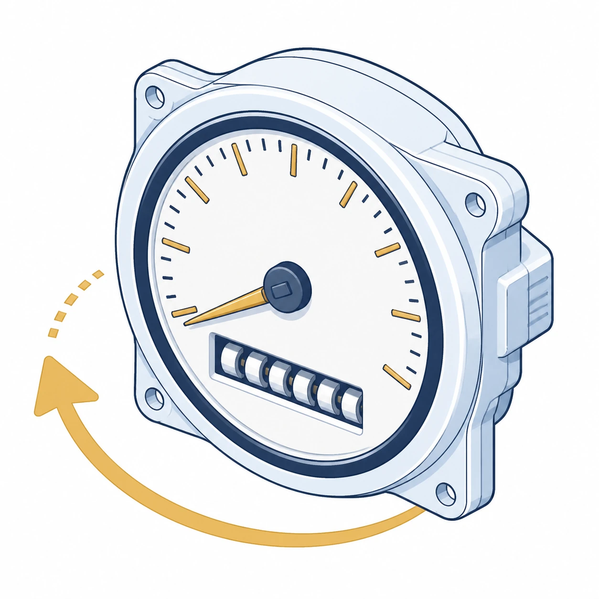

Read the readings in context.
What a mileage discrepancy can tell you
A conflicting reading is a prompt to investigate, not a conclusion about tampering.

Put the dates in order
Compare the date and odometer reading on each service document. Keep a seller’s declaration separate from a recorded service entry.
Ask for the original documents
A transcription error, incorrect vehicle match or incomplete history can create apparent conflicts. Ask for the job card and compare vehicle identifiers.
Inspect before concluding
Compare the documents with the car’s odometer and physical wear. A discrepancy alone does not establish the cause or the true mileage.
See the records in context.View sample mileage
Illustrative sample. Records and amounts are synthetic.